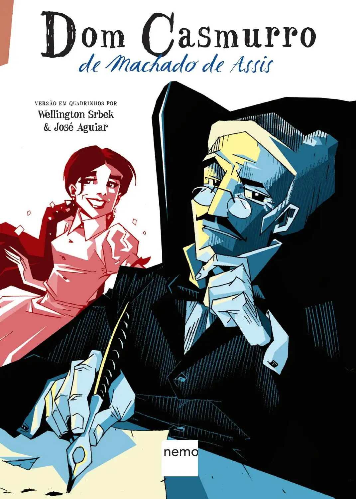
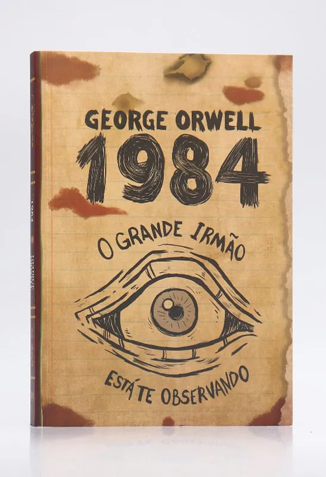

Estação de Leitura



Um espaço de conhecimento, cultura e comunidade para todos os batataenses. Descubra nosso acervo, participe de eventos e aproveite nosso espaço de leitura.
Explorar Livros Formulário de ContatoLeve livros para casa e aproveite a leitura no seu tempo. Temos um acervo diversificado para todos os gostos.
Computadores com acesso gratuito à internet para pesquisa, estudos e desenvolvimento.
Participe dos nossos encontros mensais para discutir obras, autores e compartilhar experiências.
📍 Venha desvendar esses segredos escondidos entre as páginas e descobrir que, às vezes, os livros guardam muito mais do que palavras. Talvez até um pedaço da sua própria história já esteja esperando para ser encontrado. 🕵♂📚✨
Você sabia que a Estação Cultura de Batatais recebe visitas guiadas?

📍Em comemoração ao Dia do Bibliotecário (12/03), a Biblioteca Pública Municipal Dr. Altino Arantes convida você para uma sessão especial da animação "Teca e Tuti: Uma Noite na Biblioteca"!
📍 Venha desvendar esses segredos escondidos entre as páginas e descobrir que, às vezes, os livros guardam muito mais do que palavras. Talvez até um pedaço da sua própria história já esteja esperando para ser encontrado. 🕵♂📚✨
Nesta exposição única, convidamos você a explorar os tesouros escondidos que encontramos entre as páginas dos livros de nossa biblioteca. Cartas, fotografias, bilhetes e outros fragmentos de memórias esquecidas que contam histórias fascinantes de seus antigos donos.
Descobrimos cartas de amor do início do século XX, receitas antigas, desenhos infantis e até mesmo um bilhete de loteria que poderia ter mudado uma vida. Cada objeto conta uma história única, congelada no tempo, esperando para ser redescoberta.
📅 Data: 28 de Março a 30 de Abril de 2025
⏰ Horário: Segunda a sexta, das 8h30 às 17h | Sábados, das 9h às 12h
🎟️ Entrada: Gratuita
📍 Local: Biblioteca Dr. Altino Arantes - Estação Cultura, Batatais
Não perca esta oportunidade de conectar-se com o passado e talvez até encontrar um pedaço da sua própria história entre nossas descobertas!
🐛📖 Teca é uma traça e Tuti um ácaro, e juntos embarcam em uma aventura mágica ao ficarem presos na biblioteca durante a noite. Com muita curiosidade e descobertas, eles mostram como os livros guardam histórias incríveis e nos levam para mundos fantásticos!
📅 Data: 12 de março (quarta-feira)
⏰ Horário: 08:15h e 14:15h
🎟️ Entrada: Gratuita
📍 Local: Biblioteca Pública Municipal Dr. Altino Arantes
🎟 Entrada gratuita - Limitada!
Basta comparecer à biblioteca com documento de identidade e comprovante de residência. O cadastro é rápido e gratuito.
Funcionamos de Segunda a Sexta, das 08:30h às 17h. Aos sábados, das 9h às 12h.
Cada leitor pode levar até 3 livros por vez, pelo período de 14 dias, com possibilidade de renovação.
segunda a sexta-feira, das 08:30 às 17h
Estação Cultura, Batatais 14300-240
bibliotecadraltinoarantes@gmail.com
(16) 3662-7785